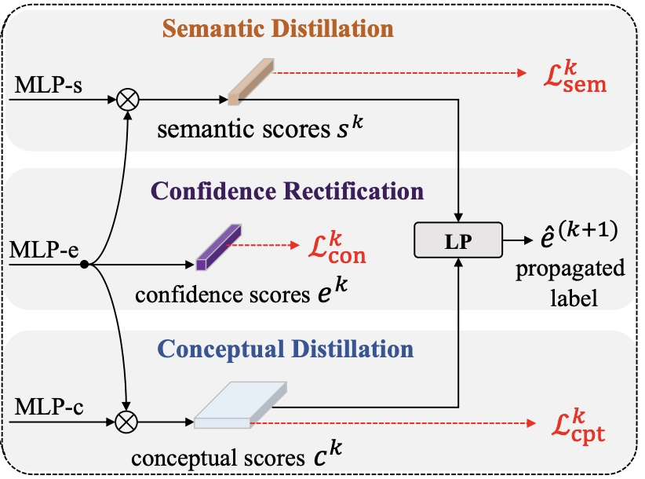
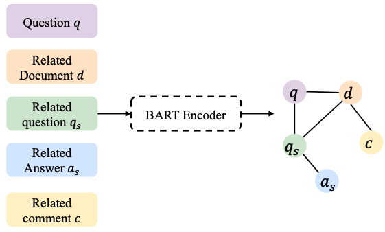
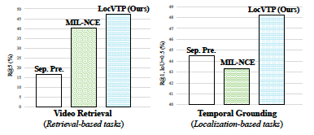
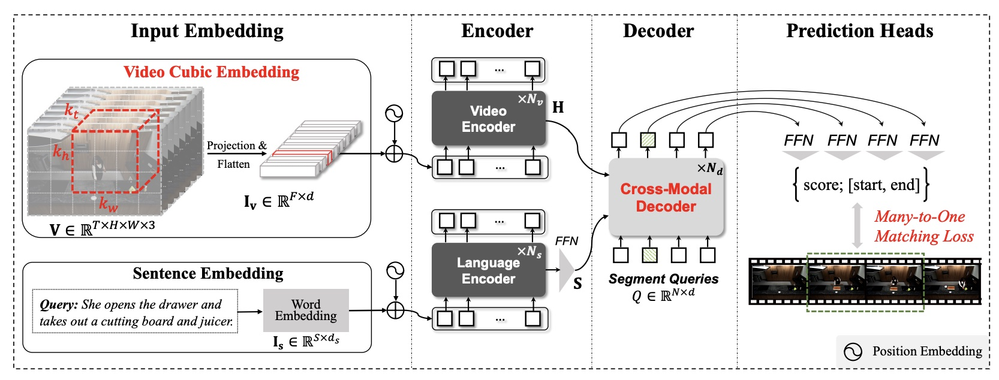
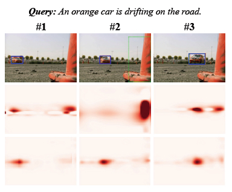
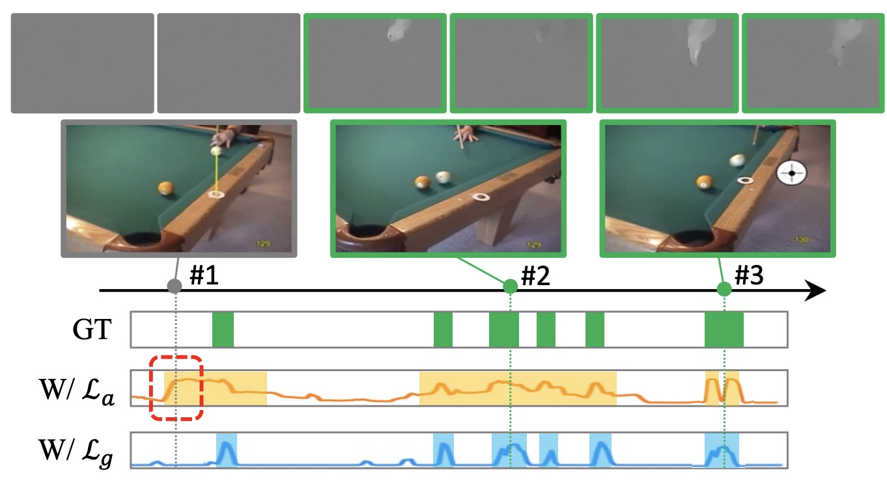
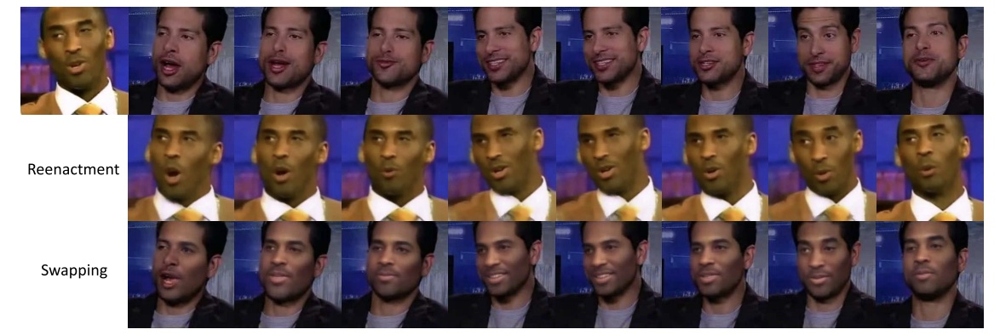
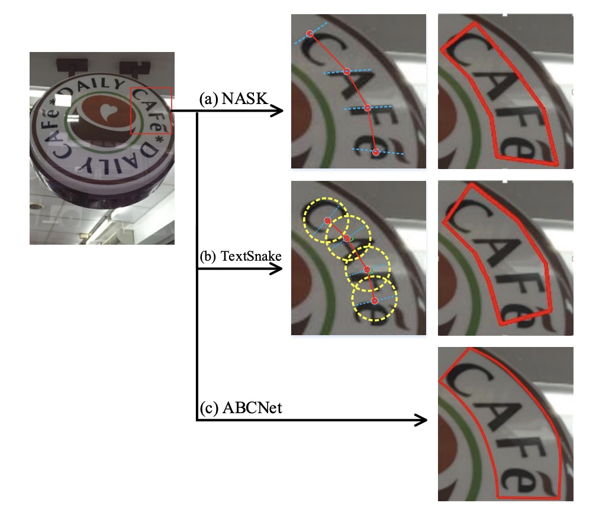
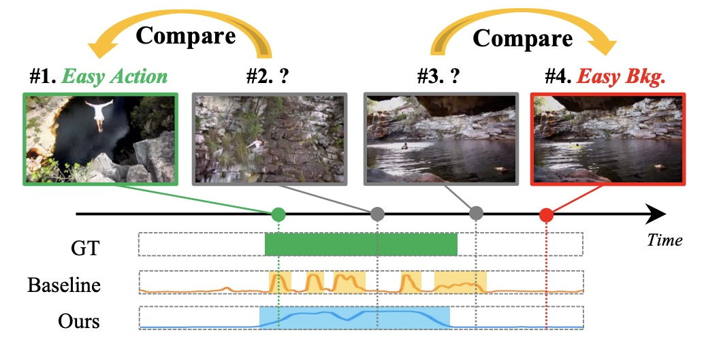

Meng Cao
Researcher at International Digital Economy Academy (IDEA)
I am a researcher at International Digital Economy Academy (IDEA). Prior to that, I received my Ph.D. degree in the School of Computer Science, Peking University, supervised by Prof. Yuexian Zou. I received my B.E. degree from Huazhong University of Science and Technology (HUST). I am fortunate enough to work with Prof. Mike Shou from NUS, Prof. Long Chen from HKUST, and Fangyun Wei from MSRA.
[Email]: mengcaopku [at] gmail.com; [Resume],[Google Scholar],[GitHub].
Updates
- 2023.08: Our paper on video retrieval is accepted by ICCV 2023.
- 2023.05: I passed my PhD thesis defense. I'd like to thank everyone who has helped me. Thank you all.
- 2023.03: Our paper on weakly-supervised video grounding is accepted by CVPR 2023.
- 2022.08: Our team win the first place (1/4278) in Challenge of Financial QA under Market Volatility.
- 2022.07: Our paper on temporal action localization is accepted by IEEE-TIP.
- 2022.07: Our paper on video-text pre-training is accepted by ECCV 2022.
- 2022.06: Our paper on spatio-temporal video grounding is accepted by ACM MM 2022.
- 2021.08: Our paper on video grounding is accepted by EMNLP 2021 as oral presentation.
- 2021.06: Our paper on video portrait manipulation is accepted by IEEE-TIP.
- 2021.03: Our paper on temporal action localization is accepted by CVPR 2021.
- 2021.03: Our paper on scene text detecton is accepted by IEEE-TCSVT.
Selected Publications
|  | |
|  |
Technical Report for WAIC Challenge of Financial QA under Market Volatility
TianChi Challenge
Meng Cao, Ji Jiang, Qichen Ye, Yuexian Zou
Winner of Financial QA Challenge. |
|  | |
|  |
On Pursuit of Designing Multi-modal Transformer for Video Grounding
EMNLP 2021
Meng Cao, Long Chen, Mike Zheng Shou, Can Zhang, Yuexian Zou
Oral Presentation. |
|  |
Correspondence Matters for Video Referring Expression Comprehension
ACM MM 2022
Meng Cao, Ji Jiang, Long Chen, Yuexian Zou
|
|  |
Deep Motion Prior for Weakly-Supervised Temporal Action Localization
IEEE Transactions on Image Processing
Meng Cao, Can Zhang, Long Chen, Mike Zheng Shou, Yuexian Zou
|
|  |
UniFaceGAN: A UniFied Framework for Temporally Consistent Facial Video Editing
IEEE Transactions on Image Processing
Meng Cao, Haozhi Huang, Hao Wang, Xuan Wang, Li Shen, Sheng Wang, Linchao Bao, Zhifeng Li, Jiebo Luo
|
|  |
All You Need is a Second Look: Towards Arbitrary-Shaped Text Detection
IEEE Transactions on Circuits and Systems for Video Technology
Meng Cao, Can Zhang, Dongming Yang, Yuexian Zou
|
|  |
Experiences
|
2022.06—2023.04: Research Intern at Microsoft Research Asia |
|
|
|
2019.07—2022.05: Engineering and Research Intern at Tencent AI Lab |
|
2018.03—2018.08: Engineering Intern at Alibaba |
|
|
2016.05—2017.02: Engineering Intern at Qihoo 360 |